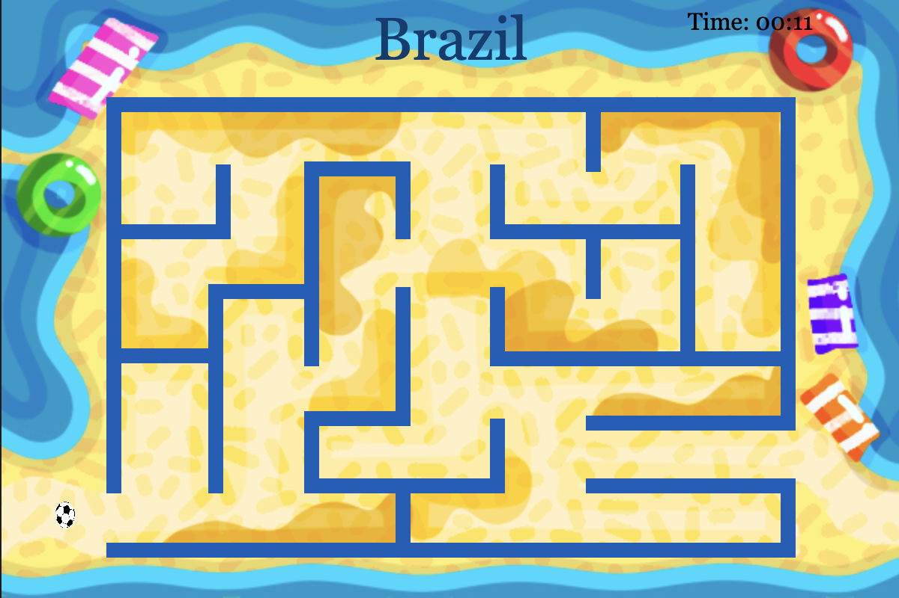
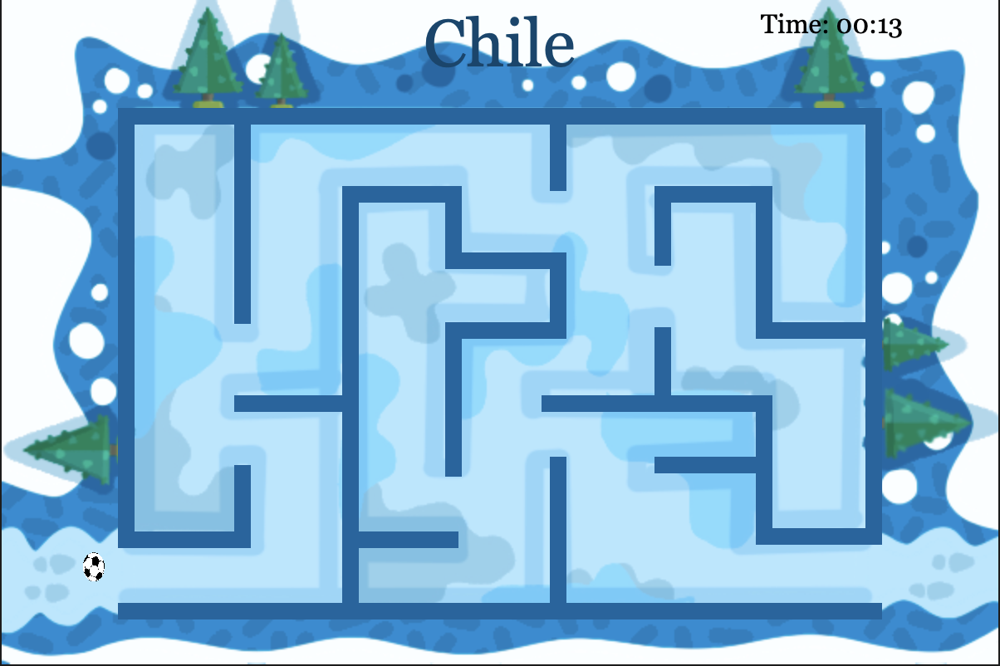
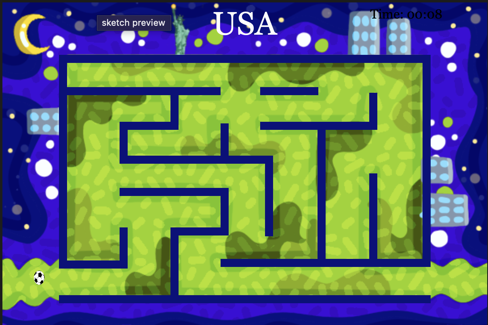

“Journey Across Borders”
Gameplay Demo
Description
Journey Across Borders is an interactive game created using p5.js, inspired by my own life moving between different countries and cultures. Born in Brazil, later living in Chile, and now in the United States, I experienced firsthand the challenges and opportunities that come with crossing borders and navigating different cultural identities. The game engages players with narrative choices and playful mechanics to reflect on themes of migration, belonging, and exploration. Through abstract environments and symbolic challenges, the experience mirrors both the physical and emotional aspects of adapting to new places and building identity across cultures.
Observations
This project gave me the opportunity to combine personal storytelling with creative coding. The game unfolds across three levels, each reflecting a part of my own journey across countries and cultures. The first level is set in Brazil, where I portrayed the vibrant beaches using bold, saturated colors and floating elements in the water. The character is a soccer ball, chosen as a playful symbol of Brazilian identity. Moving to Chile, the second level shifts to a snowy environment inspired by the Cordillera de los Andes, where I used to ski when I lived there. Finally, the third level represents the United States, with a palette of green and purple as strong complementary colors, and doodles that illustrate New York City: the Statue of Liberty and clusters of tall buildings to capture the energy of the place where I live now.
Screenshots


